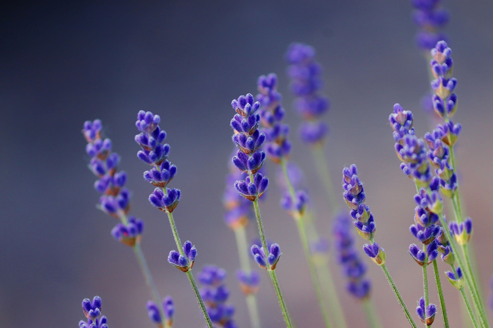
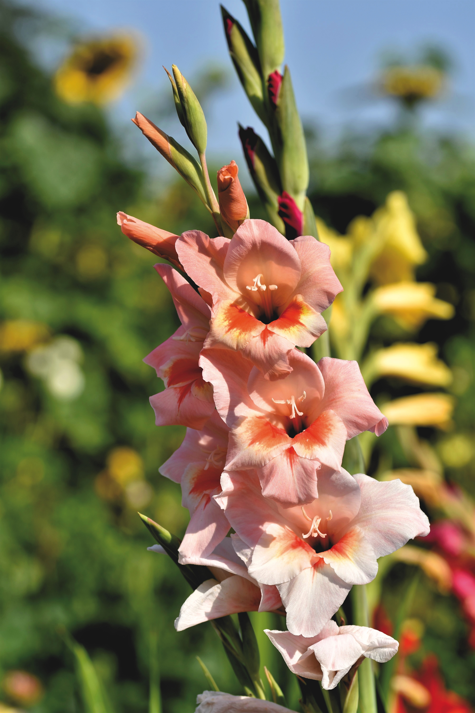
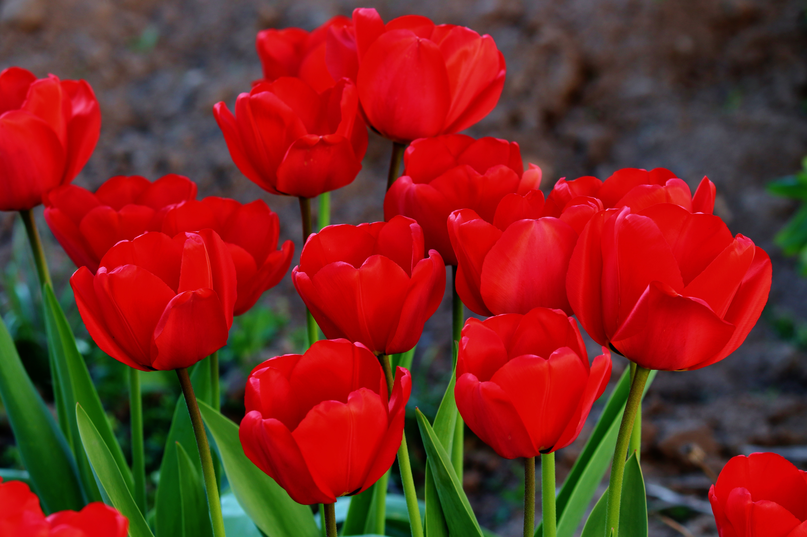

Lavender
Ecology
The most cultivated species in the Lavandula genus, the majestic Lavender, is found in many parts of the world, including Europe, Most of northeast Africa and the southern parts of Asia. The name ‘Lavender’comes from the latin verb ‘Lavare’ meaning ‘to wash’.
Facts and Uses
The uses of the Lavender are mainly scented products such as soaps, candles and sometimes even pastries for added flavour and scent. It can even be used in something referred to as ‘aromatherapy’, the therapeutic of using the smell of the lavender to induce a soothing effect.
Symbolism
Lavender flowers represent purity, serenity, grace, and calmness. Purple is the color of royalty and symbolises elegance, and luxury, too. The color is also associated with the crown chakra, which is the energy center associated with higher purpose and spiritual connectivity in traditional yoga.
Gladiolus
Ecology
The Gladiolus is a flowering plant that is sometimes reffered to as the ‘Sword Lily’ for its unique shape. It is found in many parts of the world, Including the lower parts of Europe, Asia and humid regions in Africa. These flowers are colored pink, light purple, cream and red with white markings. The term ‘Gladiolus’ means sword in Latin.
Facts and Uses
The Gladiolus is the official flower of August, this is due to them blooming the most during the summer months.. The vast hybridisation and crossbreeding of different types of Gladiola has created over 300 species for the plant.
Symbolism
Gladioli express strength of character, remembrance, faithfulness, and moral integrity. The gladiolus, hence its name, is also meant to pierce the heart of the recipient, conveying love. Additional meaning can be concieved through different colors, using the standard symbolism of flower color from the Victorian era.
Tulip
Ecology
The tulip is a flower that usually blooms in spring, part of a genus known for being bulbous. It is in bright, warm colors such as white, pink, red, yellow, orange. There are around 75 species of tulip and have been one of the most cultivated and admired plants in history. Originally growing in the temperate mountains of eastern persia and asia.
Facts and Uses
Tulips are partially edible. While natural tulips have a limited variety of colors, They are available in almost every color and shade excluding pure blue. There is a condition called ‘Tulip Fingers’ a form of Dermatitis commonly seen in those who handle tulips often. The word tulip originally comes from the persian word for turban.
Symbolism
Different tulip colors have different meanings, purple is a symbol of royalty, as it is the color of british royalty. Red tulips symbolism deep love and are also the 2nd most given flower on valentines day. White tulips symbolise purity and honor. 